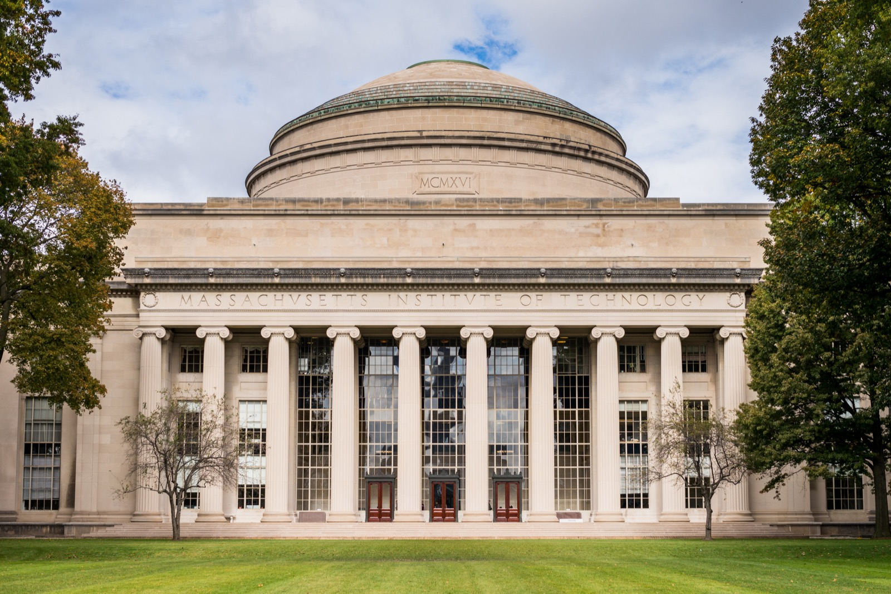

美国 印度首超中国，成为最大留学生来源国（2023/24 学年起）。
IIE Open Doors 2024–2025
澳大利亚、加拿大、英国 同时收紧国际学生招生上限。
2024–2025 政策回顾
OpenAI 推出 ChatGPT Edu，与亚利桑那州立大学开展全校级合作。
OpenAI · 2024.5–2026
⚙ 操作提示：按 S 打开演讲者备注；按 F 全屏；按 ? 查看更多快捷键。
从 1990 年代"国际化即西化"的乐观，到 2020 年代"国际化即风险"的犹豫 —— 高等教育的全球流动，正在被地缘政治、移民政策、科技竞争重新定义。
5 张数据图 · 4 个国别政策 · 3 个跨境办学案例 · 1 次反思
人的跨境：留学生、访问学者、跨国教授。
这是过去 30 年公众最熟悉的"国际化"。
组织的跨境：分校、合作办学、双联学位、跨国联合学院。
中外合作办学、Yale-NUS、宁波诺丁汉都是例子。
课程与文化的国际化：在本校进行外语授课、跨文化课程、虚拟交换。
即使学生不出国，也能"国际化"。
"国际化是把跨国 / 跨文化 / 全球维度整合到高等教育的目的、功能与提供方式之中的过程。" Jane Knight, Higher Education in Turmoil (2008)
注：横向条形长度按 2030 预测=100% 比例；2030 为 UNESCO 估算趋势线。
UNESCO Institute for Statistics (UIS), Global Flow of Tertiary-Level Students, Feb 2025 Data Refresh — uis.unesco.org/en/uis-student-flow
| 学年 | 总数 | 印度 | 中国 |
|---|---|---|---|
| 2023/24 | 1,126,690 | 331,602 (+23%) | 277,398 (−4%) |
| 2024/25 | 1,177,766 | 363,019 (+10%) | 265,919 (−4%) |
2024/25：STEM 占 57%；国际学生贡献美经济近 550 亿美元，支撑 35.5 万就业。
IIE Open Doors 2024 & 2025 — opendoorsdata.org · WENR 分析
IIE "Four Things to Know About the Fall 2025 Snapshot," Nov 2025; The PIE News · NAFSA
| 国家 | 主要政策 | 生效 | 实际影响 |
|---|---|---|---|
| 🇺🇸 美国 | SEVP 撤销 / Rubio 签证清查 / OPT 限缩 / H-1B $10万 费 | 2025.5–11 | 新生 –17%（Fall 2025） |
| 🇨🇦 加拿大 | Study Permit 配额 360,000（2024）→ 155,000（2026） | 2024.1 起 | 2025 实际批准 –64% |
| 🇦🇺 澳大利亚 | NPL 配额 270,000；Direction 107/111 实质限招 | 2024.8 | VET/TAFE 受影响最深 |
| 🇬🇧 英国 | 禁止硕士带家属；Graduate 签证 24 → 18 个月 | 2024.1 / 2027.1 | HESA 总数 –5.9% |
| 🇳🇱 荷兰 | Internationalisation in Balance Act：要求 2/3 课程荷兰语 | 立法中 | 多校自愿削减 EMI |
综合：Open Doors 2025; HESA SB273 (2026.1); IRCC; ICEF Monitor; DAAD; JASSO 2025
The Harvard Crimson (2025-05-23); Inside Higher Ed (2025-05-30); CNN (2025-05-28); NAFSA Past Updates
条形长度按 2017 峰值=100% 比例；数据来自 Nature 2024 评论的 NSF/Web of Science 整理。
"如果合作能解决气候变化和大流行病，那么科学合作的下降意味着整个人类都在为政治付费。" Caroline Wagner, *Nature* 评论, 2024-07
Nature (2024-07): "Why China-US science collaborations are dying"; PNAS (Jia et al. 2024) — pnas.org/doi/10.1073/pnas.2301436121
U.S. GAO-24-105981; The Harvard Crimson (2025-05-05); Nature (2025); SCMP (2025-05)
1979 年签订的《美中科学技术合作协定》2024 年 12 月 13 日签署修订版，延期 5 年。 新版强化"研究人员保护、数据共享对等性、违约审议程序"，但适用范围限缩至政府间合作。
即使在最低谷，1979 年中美关系正常化的制度遗产仍未被掀翻。
2023.3 von der Leyen 提出"去风险"；2024.1 欧盟出台 European Economic Security Package。
MERICS 2025 Profiling 显示：欧洲对华研究合作立场分散 ——
德、荷、瑞典严格筛查；匈、塞维持开放。
不是"脱钩"，而是"分布式风险管理"。
"在 21 世纪，研究合作不会消失，但会被重新分层：核心技术圈层化、应用研究有限合作、基础研究继续开放。" MERICS, *Profiling European Countries' Resilience Towards China 2025*
U.S. Dept of State (2024-12-13); Science (AAAS) on STA renewal; MERICS 2025 Update — merics.org
| 典型机构 | 规模 / 招生 | "国际化指数"亮点 |
|---|---|---|
| 昆山杜克大学（DKU） | 2025 年 144 国 11,884 份申请；2026 招 385 人 | 2023 届 81% 中国毕业生进入美国 Top 10 / 常春藤 |
| 上海纽约大学（NYU Shanghai） | 2025 全球申请 ~24,000；2026 招 276 | 强制 1–2 学期海外学习；NYU 三大 Portal Campus + 13 Global Sites |
| 西交利物浦大学（XJTLU） | 年招 ~4,400（中国规模最大） | 2024 届 93.56% 升学进入 QS Top 100 |
| 宁波诺丁汉大学（UNNC） | 第一所中外合办高校（2004） | 2024 届毕业起薪 ~12,000 元/月 |
教育部中外合作办学监管平台 (crs.jsj.edu.cn, 2026-05 数据); Tencent News (2025-04); DKU/XJTLU/NYU Shanghai 官网
同样命运：日本 1980s 接收 30+ 所美国分校，2024 仅余 Temple Univ Japan。
Inside Higher Ed (2025-02); Yale News (2021-08-26); University World News (2025-10-08); Brand HK 2025
"我们正在制造一代不会用母语谈论自己专业的本科生。" 荷兰高教部长 Robbert Dijkgraaf, 2023
Applied Linguistics (Oxford, 2025); Higher Education Studies (Routledge, 2025) — academic.oup.com/applij
过去 30 年默认"国际化 = 留学美英澳"。 现在德、日、阿联酋、沙特、东南亚都在以不同方式参与。 多极化的国际化时代正在到来。
跨境的"人"流动遇阻，跨境的"组织"流动两极分化 —— 东方在扩张分校，西方在收缩分校。
大学曾自视为"政治避风港"。 2025 年的哈佛 SEVP 案、Lieber 入清华、孔子学院退潮证明 —— 大学已被嵌入大国博弈。
举手 ✋ A 愿意 / B 不愿意 / C 看条件 ——你会怎么辩护？
从 2012 年的"MOOC 革命"到 2022 年的"ChatGPT 时刻" —— 技术承诺过两次颠覆大学。 第一次失败了。第二次，会成功吗？
两条线索 · 三组关键数据 · 五位代表人物 · 一个真实课堂样本
承诺："把哈佛课送给印度农村学生"
结果：三大平台资本化命运不一
用户主体并非"被排除者"
真正成长的是"在职再培训"市场
主角：Coursera / edX / Udacity / 中国大学MOOC
承诺："为每个学生配一位 AI 私教"
现状：学生使用率从 53% 飞跃到 92%
检测器集体溃败
评估方式被迫倒退到手写考
主角：ChatGPT / Claude / Khanmigo / DeepSeek
L. Pappano NYT (2012-11); J. Reich *Science* 363:130 (2019); Bloomberg / Crimson on 2U bankruptcy (2024-07)
Justin Reich 在 Failure to Disrupt (2020) 提出 edtech Matthew effect：
"技术单独无法变革教育 —— 它倾向于放大已有的不平等。" Justin Reich, MIT, *Failure to Disrupt* (2020)
Reich & Ruipérez-Valiente, "The MOOC Pivot," *Science* 363(6423):130-131 (2019-01); J. Reich, *Failure to Disrupt*, Harvard UP (2020)
美：风险投资 → 上市 / 被收购 / 破产 —— 市场化的脆弱性
中：政府平台 + 教育部统筹 + 高校承办 —— 行政化的稳定性
人民日报 / 教育部新闻发布会 (2023-01-03); MOE 新闻发布会 (2025-12-30); smartedu.cn
ChatGPT 上线 ——
人类历史上增长最快的消费应用。
而它的第一个真正的"实验场"，
就是大学课堂。
Source: UBS / Reuters Jan 2023; Sensor Tower
NBC News (2023-05-18); Sciences Po; OpenAI / Anthropic / 教育部官网
英国本科 n=1,041 (2025-02)
美国 13-17 岁青少年 n=1,391 (2024 秋)
美国大学生 *Time for Class 2024*
HEPI *Student GenAI Survey 2025*; Pew Research (2025-01-15); Tyton Partners (Jun 2024)
教授 Jared Mumm 把全班作业复制粘贴到 ChatGPT 询问"是否 AI 撰写"， ChatGPT 回答"是"每一篇作业， 他据此威胁不予毕业。学生用 Google Docs 时间戳自证清白。
"ChatGPT 既不能可靠生成事实，也不能可靠检测自己生成的内容。" Washington Post, 2023-05-18
官方公告："AI 检测器对非英语母语者的文本误判率显著上升"—— 在 Brightspace 中正式禁用。
这意味着检测器系统性地把非母语者的诚实写作误判为 AI，等于用"反 AI"工具实施语言歧视。
Rolling Stone (2023-05-16); Washington Post (2023-05-18); Vanderbilt Brightspace News (2023-08-16); Stanford HAI
2023.2 密歇根州大枪击案后，Vanderbilt 大学 Peabody 学院 EDI 办公室向学生发送慰问邮件。 邮件末尾赫然印着：
"Paraphrase from OpenAI's ChatGPT AI language model, personal communication, February 15, 2023."
学生愤怒：你用 AI 写的"哀悼"是真的吗？两位副院长被停职接受复审。
"AI 时代的大学，反而要更加追问 ——什么必须由人来做？" 本课程的延伸思考
CNN Business (2023-02-22): "Vanderbilt apologizes for using ChatGPT to console students after Michigan State shooting"
两年间各校蓝皮考试本（手写考试用）的销量增长。
15 年前我们讨论"如何取消纸笔考"； 今天我们讨论"如何恢复纸笔考"。
Daily Cardinal (2025-11); Entrepreneur on WSJ; Worcester State *Currents in T&L* (2024-09); University of Sydney AI Policy (2024-11-27)
谁？宾大 Wharton 副教授；Co-Intelligence (Penguin, 2024.4) 作者，NYT 畅销书； *Time* 评 "AI 领域最具影响力 100 人"；Substack One Useful Thing 全球高教教师必读。
"我们正面对一个普通人都拥有几位博士级合作者的世界。 问题不是 AI 会不会替代你 —— 而是会不会用 AI 的人替代不会用 AI 的人。" Ethan Mollick, *Co-Intelligence* (2024)
Wharton 课堂经典任务： 必须用 AI 生成 5 段文章 + 1 张图， 但必须尝试5 种不同 prompt并写反思 —— 把"作弊"变成提示工程实训。
E. Mollick *Co-Intelligence* (Penguin/Portfolio 2024); Mollick & Mollick "Assigning AI" SSRN 4475995 (2023-06); oneusefulthing.org
CSU 自查 94,000 名受访者：
OpenAI 官方 (openai.com/index/asu/, /chatgpt-edu/, /openai-and-the-csu-system/); CalMatters (2026-05-01); Anthropic (2025-04-02)
| 主体 | 关键动作 | 规模 / 范围 |
|---|---|---|
| 教育部 等五部门 | 《"人工智能+教育"行动计划》 (教科信〔2026〕1 号) | 2026.4 系统部署人才培养、应用创新与生态建设 |
| 清华大学 | AI 赋能教学试点；2025.2 发布 AI 素养网站 | 113 门 AI 试点课 + 147 个 AI 教学班（截至 2024.12） 整合 DeepSeek、智谱清言、Kimi |
| 华东师大 + 北师大 | 2024.6.29 联合发布国内首个 《生成式 AI 学生使用指南》 | 华东师大自研 Chat ECNU，接入 DeepSeek-R1 印发《AI 赋能本科教育全过程方案》 |
| 浙江大学 | 2025.2.14 上线"浙大先生" | 本地化部署 DeepSeek V3/R1 通过 CARSI 联盟向全国 829 所高校开放 |
教育部官网 (2026-04-10); 清华大学官网 jyjx; 华东师大新闻 (2024-06); 中新网 (2025-02-26)
"Certainly, here is a possible introduction for your topic:..."
— Elsevier《Surfaces and Interfaces》某论文引言开头（2024.3 被发现）
"I'm very sorry, but I don't have access to real-time information or patient-specific data, as I am an AI language model"
— Radiology Case Reports 某论文（同期发现）
Nature 社论 (2023-01-24); Scholarly Kitchen (2024-03-20); Kobak et al. arXiv 2406.07016 (2024-06); Liang et al. arXiv 2403.07183 (2024-03)
"我们用 19 世纪的课堂、20 世纪的教学法， 试图教 21 世纪的孩子去面对22 世纪的技术。" 常被引述（出处不一），现实写照
Stanford HAI, *2025 AI Index Report* (2025-04), Education Chapter — hai.stanford.edu/ai-index/2025-ai-index-report/education
2023 年著作 *Who Wrote This? How AI and the Lure of Efficiency Threaten Human Writing* (Stanford UP)
"写作不只是记录思想， 它是形成思想的过程本身。 我们正在失去这一过程。" Naomi Baron, *Who Wrote This?* (2023)
核心论点：当学生用 AI"省略"写作过程， 他们也省略了澄清思维、面对自我表达困难的认知锻炼。
AI Institute for Teachers of Writing 主任； 倡导 "curious skepticism" 立场。
"教师不应陷入'采纳 vs 拒绝'的二元阵营。 我们需要有好奇心的怀疑—— 既不浪漫化，也不妖魔化。" Marc Watkins, Substack 'Rhetorica' (2024)
关键警示：AI 公司有商业利益鼓励"全面拥抱"； 教师有焦虑利益倾向"全面拒绝"—— 两者都不是教育最优解。
N. Baron *Who Wrote This?* (Stanford UP 2023); M. Watkins, marcwatkins.substack.com
身份：体制内的"温和拥抱派"代表， 2025.2 率全国政协教科卫体委员会调研北邮、好未来"AI 助力教育变革"。
三个主张：
身份：资深教育评论家，对 AI 检测工具持明确怀疑态度。
"基于简单文本组合的评估不可能完全准确， 强制使用反而对学生造成不便， 如同削足适履。" 储朝晖（多次媒体访谈）
核心立场：AI 可以辅助，但评估仍需有经验的教师把关。
新华网 / 新浪财经 (2025-02-26); 多家媒体对储朝晖的采访汇编
"Rubber Duck Debugging"是程序员经典自助技巧 —— 对着橡皮鸭口述代码，往往能自己发现 bug。 David Malan 教授 2023 春把这只鸭子变成 GPT-4 驱动的 AI 助教。
Liu, Bunde, Yang, Malan, "Teaching CS50 with AI" — cs.harvard.edu/malan/publications/V1fp0567-liu.pdf

MIT OCW 至今：4 亿+ 累计学习者，2,500+ 门课程； 但 22 年过去，MIT 自己仍然是世界最稀缺的本科教育之一。
这告诉我们什么？开放知识 ≠ 开放教育。 大学的稀缺性从来不在于"知识获取"， 而在于"人的形塑"。
MIT OpenCourseWare 主页 ocw.mit.edu/about; OpenAI + ASU 案例 (openai.com/index/asu)
MOOC 没颠覆大学，AI 也未必能。 但每一次"未颠覆"都永久改变了大学的教学法、评估方式与基础设施。
美国靠平台采购（OpenAI / Anthropic 商业部署）， 中国靠国产模型 + 教育部统筹。 共同的盲区：教师如何变革教学法。
当 AI 占领"知识获取"，大学的不可替代性反而被凸显 —— 情感共同体、评估能力、价值塑造、认知锻炼本身。
如果"知识获取"被 AI 解决、"学位"被微证书解构、"国界"被脱钩重写 —— 那么 21 世纪后半叶的大学，到底长什么样？
五个真实样本 · 三种新形态 · 四个待回答的问题
John Belcher 教授因大一物理出席率跌至 40% 重新设计课堂：圆桌 9 人 + 3 个三人小组。
Robert Beichner 1990s 中期启动；7 英尺直径圆桌，每桌 3 个三人组配实验柜。
同一位教师在传统教室与 ALC 教 BIOL 1003 控制变量。入选 *Science* 2013 Editor's Choice。
"It's not you,
it's the room." S. Cotner et al.
🪑 关键设计要素：可移动桌椅 · 写字墙 · 协作圆桌 · 可重构家具
MIT iCampus (web.mit.edu/edtech); SCALE-UP NCSU (scaleup.ncsu.edu); U Minnesota CEI; Freeman et al. *PNAS* 2014
💡 提问：你最常去图书馆的哪个角落？ 这一年你有多少次"在图书馆遇到能聊得来的陌生人"？
MIT News (2021-09); Harvard Gazette (2017-04); 清华图书馆 lib.tsinghua.edu.cn; 汕大图书馆 lib.stu.edu.cn
HyFlex (Hybrid-Flexible) 课程允许学生每节课自主选择：
疫情把它从"边缘实验"推上"主流议题"。
B. Beatty *Hybrid-Flexible Course Design* (UMN 2020); HyFlex Learning Community 2024-26 综述; EDUCAUSE Horizon 2025; smartedu.cn
| 平台 | 关键数据 |
|---|---|
| Coursera | 注册学习者 1.682 亿（+19%） |
| Google Career Cert. | 75% 毕业生 6 个月内获正向职业结果 |
| IBM SkillsBuild | 承诺 2026 年底培训 200 万 AI 学习者 |
大学也开始"接受"：ASU 完成微证书后入读硕士可申请学分转换；Michigan MasterTrack 可获 6 学分抵扣。
"未来的雇主只会问 —— 你能做什么，而不是你在哪里上的学。" Kevin Carey, *The End of College* (2015)
对：微证书爆发，学位之外路径变多。
错：名校学位信号溢价不降反升。
Coursera 2024 Annual Report (SEC); Google Grow with Google; Inside Higher Ed (2015-03)
一对一辅导 + 掌握学习 → 学生表现高出传统课堂 2 个标准差，优于 98% 对照组。
困境：一对一辅导太贵，无法规模化。
| 产品 | 规模 / 效果 |
|---|---|
| Khan Academy Khanmigo | K-12 用户：6.8 万 (2023-24) → 70 万 (2024-25)；总用户 140 万；34 种语言 |
| Duolingo Max | Roleplay 4 周后 78% 用户感觉对真实对话更准备好；课程完成率 +15% |
| Carnegie Learning MATHia | RAND "Gold Standard"：第二年实施标准化测试成绩接近翻倍 |
B. Bloom *Educational Researcher* (1984); Kestin et al. (Harvard 2024); K-12 Dive (2025); Carnegie Learning Research; Brookings (2024)
4 年 7 城轮转，无传统讲座，全部 Forum 互动课。
巴黎起家。学费免、无教授、无文凭门槛、24/7 开放。纯同伴 + 项目学习。
西湖、南科大、上科大：海归师资、通识大类、生师比 6:1（传统 18:1）。
2024 Cell/Nature/Science 发文：南科大第 8、西湖第 9、上科大第 11。
Minerva University Wikipedia; 42.fr; news.eol.cn 中国新型研究型大学综述 (2025-06)
讲台减少，圆桌增加； 图书馆从"书的仓库"变成"人的栖居地"。 校园的剩余价值在偶遇与共同体。
线上线下、同步异步并存。 但代价是教师认知负荷飙升、学生归属感下降。 "灵活"不是免费的。
Coursera 1.68 亿用户、Google Certs 75% 就业 —— 微证书已是真实选项。 但清华学位的信号价值不仅没削弱，反而上涨。
AI 私教第一次让"一对一辅导平民化"成为可能。 但也带来下一个数字鸿沟—— 工具公平不等于使用公平。
Minerva（流动+精选）、42（同伴+项目）、 西湖（小规模+精英师资）—— 单一"研究型大学"模板被真实地挑战。
下面是三个问题。我们没有时间一一展开 ——
挑你最有感触的一个，与同桌交流 90 秒，
然后我们听 2-3 位同学的回应。
如果 90% 的知识传输都可以通过手机和 AI 完成， 大学校园在 2035 年还应不应该存在？ 为什么？
参考数据：MIT OCW 累计 4 亿+ 学习者；国家智慧教育平台 1.78 亿用户。
AI 私教真的能解决 Bloom 1984 的"2 Sigma 问题"吗？ 它会让教育更公平， 还是制造一种新的、更隐蔽的不平等？
参考：Khanmigo 70 万 vs Brookings"下一个数字鸿沟"。
如果未来雇主只看"技能护照"和真实作品， "汕头大学学士学位"还有什么意义？ 我们今天为什么还要花四年读一个学位？
参考：Carey *End of College* vs Goldrick-Rab "生命支持系统"。
"国际化没有结束，只是不再是西方化。"
21 世纪的国际化是多极、分布、被地缘政治结构性约束的。
"AI 不会取代大学，但会用 AI 的师生会取代不会用的师生。"
改编自 Mollick。关键是大学愿不愿意主动重塑自己。
"大学的不可被替代之处，不是知识获取，而是人的形塑。"
问题是：你怎么用好这四年？